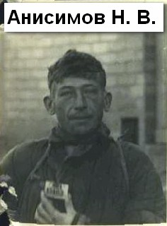
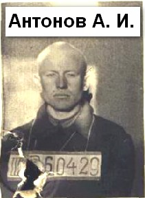
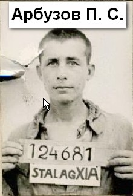

КНИГА ПАМЯТИ
(Продолжение.)
АНИСИМОВ Михаил Михайлович родился в 1925 г. в д. Крестово Луковниковского (Старицкого) района Калининской области.
Арестован немецким комендантом деревни и помещен в дулаг № 240 Ржев 30 октября 1941 года. Погиб в лагере. Братская могила военнопленных находится на старообрядческом кладбище в г. Ржев, Тверская область.
АНИСИМОВ Николай Васильевич родился 4 февраля 1910 г. в д. Шоша Погорельского (Зубцовского) р-на Калининской области. Крестьянин. Православный. Русский. Мать Катушкина. Жена Анна Ивановна.
В армию призван Зубцовским РВК. Рядовой 586-го стрелкового полка. В плен попал под г. Ельня Смоленской области. Ранен. 16 октября 1941 года из сборного лагеря в Минске был доставлен в Германию в шталаг № 321 Эрбке. Получил регистрационный номер 13463. 8 ноября 1941 г. с диагнозом «дизентерия» попал в барак для больных. Погиб в лазарете 16 ноября 1941 года. Похоронен в братской могиле на мемориальном лагерном кладбище советских военнопленных в г. Эрбке, земля Нижняя Саксония.
Документы переданы семье.
АНИСИМОВ Николай Никитич родился 3 мая 1909 г. в д. Сеславье Афанасьевского с/с Старицкого р-на Калининской области. Крестьянин. Православный. Русский. Жена Ирина Николаевна.
В армию призван Старицким РВК в 1941 г. Рядовой 73-го батальона связи. Попал в плен 4 августа 1941 г. под Смоленском. Регистрацию прошел в шталаге № 304 Цайтхайн. Номер регистрации 19991. Погиб в лагере 26 ноября 1941 г. Похоронен в братской могиле на мемориальном лагерном кладбище советских военнопленных Цайтхайн I/Руссенфридхоф, блок 7, ряд 12, в г. Риза, земля Саксония.
АНИСОВ Николай Петрович родился 2 мая 1915 г. в д. Высоково Рамешковского р-на Калининской области. Крестьянин. Православный. Русский. Мать Базова. Жена Анна Ивановна.
В армию призван Рамешковским РВК в 1941 г. Рядовой 528-го артиллерийского полка. В плен попал 4 октября 1941 г. Регистрацию прошел в шталаге IV B Мюльберг/Нойбурксдорф в Саксонии. Номер регистрации 142222. Переведен в шталаг III B Фюрстенберг на Одере. Погиб в лагере 21 апреля 1942 г. Причина в документах не указана. Похоронен в братской могиле на специальном кладбище советских военнопленных неподалеку от г. Костшин, р-н Джевице, в 1,5 км по шоссе от г. Смолар, Любуское воеводство, Республика Польша.
В Книге памяти, Рамешковский р-н, числится пропавшим без вести в декабре 1941 г.
АНИЩЕНКОВ Тихон Иванович родился 13 февраля 1904 г. в д. Челищево Демяховского с/с Бельского р-на Смоленской (Калининской) области. Крестьянин, кузнец. Православный. Русский. Мать Сильченкова. Жена Лукерья.
В армию призван Бельским РВК. Рядовой 1010-го стрелкового полка. Полпал в плен 23 августа 1941 г. под г. Гомель в Белоруссии. Регистрацию прошёл в шталаге № 321 Эрбке. Номер регистрации 13904. Заболел.10 декабря 1941 г. направлен в лагерный лазарет. Погиб в лазарете 16 декабря 1941 г. Похоронен в братской могиле на мемориальном лагерном кладбище советских военнопленных в г. Эрбке, земля Нижняя Саксония.
В Книге памяти, Бельский р-н, числится пропавшим без вести в 1943 г.
АНКУДИНОВ Фёдор Фёдорович 12 сентября 1915 г. в д. Виглино Лесного р-на Калининской области. Крестьянин. Католик. Русский.
В армию призван Лесным РВК. Рядовой 164-го стрелкового полка. Попал в плен 26 августа 1941 г. под г. Почеп Брянской области. Регистрацию прошел в шталаге № 318 Ламсдорф (Гросс-Розен). Номер регистрации 4828. Лишен статуса военнопленного. Переведен в концлагерь СС Гросс-Розен. Погиб в концлагере 15 ноября 1941 г. Похоронен в братской могиле на мемориальном лагерном кладбище советских военнопленных на полигоне Ламсдорф в г. Ламбиновице, Опольское воеводство, Республика Польша.
АНТИПОВ Василий Георгиевич (Егорович) родился 23 августа 1913 г. в д. Лясково Медновского (Калининского) р-на Калининской области. Довоенный адрес: г. Калинин, ул. Цветочная, д. 19/2. Рабочий вагоностроительного завода, столяр. Православный. Русский.
В армию призван Заволжским РВК г. Калинина в 1941 г. Сержант 562-го артиллерийского полка. Попал в плен 5 августа 1941 г. под Смоленском. Регистрацию прошел в шталаге VI B Нойверзен. Номер регистрации 35947. 23 октября 1941 г. назначен в строительный и рабочий батальон № 126. Погиб в шталаге VI B ZL Оберланген 5 января 1942 года. Перезахоронен в братской могиле советских военнопленных на лагерном кладбище в п. Оберланген, р-н Эмсланд, земля Нижняя Саксония.
Документы переданы родственникам.
В Книге памяти, г. Тверь, числится пропавшим без вести в феврале 1942 г.
АНТОНОВ Александр Иванович родился 18 апреля 1912 г. в д. Внуково Погореловского с/с Новоторжского (Торжокского) р-на Калининской области. Крестьянин. Православный. Русский. Мать Горшкова. Жена Александра.
В армию призван Новоторжским ОГВК в июле 1941 г. Рядовой 170-го артиллерийского полка. Попал в плен 22 июля 1941 г. под г. Старая Русса Ленинградской (Новгородской) области. Регистрацию прошёл в шталаге № 310 Витцендорф. Номер регистрации 35439. 1 декабря 1941 г. переведён в шталаг X A Шлезвиг. Зачислен в состав рабочей команды № 166 Фаренкруг. Погиб 31 января 1942 г. Похоронен в братской могиле советских военнопленных на территории коммуны Фаренкруг, р-н Зегеберг, земля Шлезвиг-Гольштейн.
АНТОНОВ Алексей Иванович родился 13 декабря 1919 г. в д. Емельяниха Бежецкого р-на Калининской области. Горный рабочий. Православный. Русский. Мать Царёва Аграфена.
В армию призван Бежецким РВК. Ефрейтор 226-го артиллерийского полка. В плен попал 26 июня 1941 г. под Двинском (г. Даугавпилс, Латвия). Доставлен в Восточную Пруссию, в офлаг № 52 Эбенроде. Регистрацию прошел в шталаге III B Фюрстенберг на Одере. Номер регистрации 60429. Погиб в лагере 17 апреля 1942 г. Причина не указана. После войны перезахоронен в братской могиле на специальном кладбище советских военнопленных неподалеку от г. Костшин, р-н Джевице, в 1,5 км по шоссе от г. Смолар, Любуское воеводство, Республика Польша.
В Книге памяти, Бежецкий р-н, числится пропавшим без вести в апреле 1943 г.
АНТОНОВ Александр Ильич родился 31 августа 1918 г. в г. Осташкове, ул. Кузнечная, 16, Калининской области. Шофер. Православный. Русский. Мать Калинина.
В армию призван Осташковским РВК. Рядовой 55-го стрелкового полка. Попал в плен 5 июля 1941 г. под Минском. Регистрацию прошел в шталаге № 310 Витцендорф. Номер регистрации 35108. Погиб в лагере в 1941 г. Причина не указана. Похоронен в братской могиле на мемориальном лагерном кладбище Витцендорф у п. Витцендорф, р-н Зольдау-Фаллингбостель, земля Нижняя Саксония.
АНТОНОВ Арсений Васильевич родился в 1913 г. в д. Вески Ехвинского с/с Тургиновского (Калининского) р-на Калининской области. Русский.
В армию призван Тургиновским РВК в 1941 г. Рядовой. Попал в плен. Погиб в дулаге № 184 (230) Вязьма 9 февраля 1942 г. Похоронен в братской могиле советских военнопленных на территории лагеря в г. Вязьма, ул. Репина, Смоленская область.
АНТОНОВ Г.И. родился в 1900 г. в д. Лясково Медновского (Калининского) р-на Калининской области.
Погиб в дулаге № 184 (230) Вязьма 15 января 1942 г. Похоронен в братской могиле на территории лагеря в г. Вязьма, ул. Репина, Смоленская область.
АНТОНОВ Григорий Прохорович родился 20 апреля 1909 г. в д. Пальцево Рамешковского р-на Калининской области. Крестьянин. Православный. Русский. Жена Евдокия.
В армию призван Рамешковским РВК. Рядовой 348-го стрелкового полка. Попал в плен 23 сентября 1941 г. под Смоленском. Регистрацию прошёл в шталаге № 318 Ламсдорф (Гросс-Розен). Номер регистрации 10156. 25 октября 1941 г. лишён статуса военнопленного. Переведен в концлагерь СС Аушвитц (Освенцим). Погиб в лагере 3 марта 1942 г. Похоронен в братской могиле на мемориальном лагерном кладбище жертв нацизма Освенцим, Малопольское воеводство, Республика Польша.
АНТОНОВ Иван Петрович родился 26 сентября 1912 г. в с. Гоголиха Брусовского (Удомельского) р-на Калининской области. Крестьянин. Православный. Русский. Мать Скородумова. Жена Марфа Петровна.
В армию призван Брусовским РВК. Рядовой 629-го стрелкового полка. Попал в плен 11 сентября 1941 г. под г. Вязьма Смоленской области. Регистрацию прошел в шталаге XVIII B Шпиталь. Номер регистрации 4284. Погиб в лагере 23 апреля 1942 г. Похоронен в братской могиле советских военнопленных на лагерном кладбище в п. Шпиталь на Драу, округ Мюрццушлог, земля Штирия, Австрийская Республика.
АНТОНОВ Михаил Васильевич (медальон) родился в 1902 г. в д. Благодать Овинищенского с/с Вышневолоцкого р-на Калининской области. Семья: г. Ленинград, ул. Балтийская, д.48, кв.1.
В армию призван Кировским РВК г. Ленинграда. Рядовой. Найден: июль 1995 г., Ленинградская обл., Кировский р-н, в р-не Невского Пятачка. Захоронен: Ленинградская область, Кировский р-н, мемориал «Невский Пятачок».
АНТОНОВ Михаил Кузьмич родился 25 декабря 1919 г. в д. Макарово Шайтровщинского с/с Бельского р-на Смоленской (Калининской) области. Электромонтёр. Православный. Русский. Сестра Дмитриева Александра.
В армию призван Бельским РВК. Рядовой 84-го стрелкового полка. В плен попал 26 июня 1941 г. под г. Брестом в Белоруссии. Регистрацию прошел в Нижней Силезии, в шталаге № 308 Нойхаммер-Вест. Номер регистрации 21456. Погиб в лагере 2 ноября 1941 г. Похоронен в братской могиле на интернациональном кладбище военнопленных неподалеку от г. Жагань, гмина Свентошув, у шоссе из Жагани в Илову, Любуское воеводство, Республика Польша.
АНТОНОВ Пётр Антонович родился 16 января 1908 г. в д. Кумордино Медновского (Калининского) р-на Калининской области. Крестьянин, столяр. Православный. Русский. Довоенный адрес: г. Калинин, ул. Совхозная, д. 13/34. Жене Антоновой Варваре.
В армию призван Заволжским РВК. Рядовой 413-го стрелкового полка. Попал в плен 2 августа 1941 г. под Смоленском. Регистрацию прошёл в шталаге № 302 Гросс Борн-Вестфаленхоф (Редеритц). Номер регистрации 5724. Погиб в лагере в октябре 1941 г. Похоронен в братской могиле на специальном кладбище польских и советских военнопленных неподалёку от г. Надажице, у шоссе Сыпнево-Надажице, Западно-Поморское воеводство, Республика Польша.
В Книге памяти, г. Тверь, числится пропавшим без вести в феврале 1942 г.
АНТОНОВ Пётр Иванович родился в 1911 г. в д. Карганово Калининской области. Мать Кушкова. Крестьянин. Православный. Русский. Адрес для переписки: Московская область, Коммунистический р-н, д. Ольгово. Жене Антоновой Татьяне Егоровне.
В армию призван Коммунистическим РВК. Рядовой 229-го рабочего батальона. Попал в плен 15 июля 1941 г. под Смоленском. Из фронтового шталага № 316 Седльце доставлен в шталаг IV B Мюльберг в Саксонии, где прошел регистрацию. Номер регистрации 130883. 15 октября 1941 г. переведен в шталаг XIII B Вейден в Баварии. 10 сентября 1942 г. за нарушения лагерного режима лишен статуса военнопленного и передан администрации концлагеря СС Флоссенбург/Фалькенау на территории протектората Чехии и Моравии. Позже отправлен в концлагерь СС Маутхаузен, где и погиб 17 октября 1942 г. от воспаления прямой кишки, как сказано в документах. Похоронен в братской могиле на мемориальном лагерном кладбище жертв нацизма Маутхаузен у г. Маутхаузен-Гузен, Австрийская Республика.
АНФИМОВ Геннадий Никифорович родился 6 февраля 1898 г. в г. Калязине Калининской области. Мать Стулова. Радиомеханик. Православный. Русский. Довоенный адрес: Калининская область, г. Кимры, ул. Маркса, д. 9. Жене Анфимовой Н.Н.
В армию призван Кимрским РВК. Рядовой, радист 290-го стрелкового полка. Попал в плен 16 октября 1941 г. под Брянском. Регистрацию прошел в военном округе Вена, в шталаге XVII B Гнейссендорф. Номер регистрации 78657. Погиб в лагере 3 января 1942 г. Похоронен в братской могиле на лагерном кладбище Вальдфридхоф-Кремс-Гнейссендорф, в г. Кремс на Дунае, земля Нижняя Австрия, Австрийская Республика.
АРБУЗОВ Иван Игнатьевич родился 27 сентября 1911 г. в с. Беле-Кушальское Калининского р-на Калининской области. Крестьянин. Православный. Русский. Мать Серебрякова. Жена Евдокия.
В армию призван Калининским РВК. Рядовой 42-го стрелкового полка. В плен попал 1 августа 1941 г. под г. Старая Русса Ленинградской (Новгородской) области. Регистрацию прошел в шталаге X B Сандбостель в Нижней Саксонии. Номер регистрации 113735. Погиб в шталаге IX A Цигенхайн 9 января 1942 г. похоронен в братской могиле на лагерном кладбище Цигенхайн, административный округ Кассель, земля Гессен.
АРБУЗОВ Пётр Семёнович родился 22 января 1922 г. в д. Карякино Удомельского р-на Калининской области. Крестьянин. Православный. Русский. Мать Кисточкина Мария.
В армию призван Удомельским РВК. Рядовой 420-го стрелкового полка. Попал в плен 22 сентября 1941 г. Регистрацию прошёл в шталаге XI A Альтенграбов-Глоинеталь/Магдебург. Номер регистрации 124681. 13 июля 1942 г. зачислен в рабочую команду Грёнинген № 301-2 Хальберштадт. Погиб 21 сентября 1943 г. Похоронен в братской могиле советских военнопленных в г. Грёнинген, р-н Бёрге, земля Саксония-Ангальт.
АРЕФЬЕВ Иван Александрович родился 7 августа 1921 г. в г. Вышний Волочок Калининской области. Рабочий. Православный. Русский. До войны жил в этом городе на ул. 2-й Пролетарской, д. 61. Жена Анна.
В армию призван Вышневолоцким ОГВК. Рядовой 244-го стрелкового полка. Попал в плен 17 июля 1941 г. Регистрацию прошел в шталаге VI B Нойверзен в Нижней Саксонии. Номер регистрации 31080. Погиб в шталаге XII A Лимбург 2 января 1942 г. Похоронен в братской могиле на лагерном кладбище Лимбург на территории муниципальной общины Диц (г. Дитц), р-н Рейн-Лан, земля Рейнланд-Пфальц.
(Продолжение следует.)
|